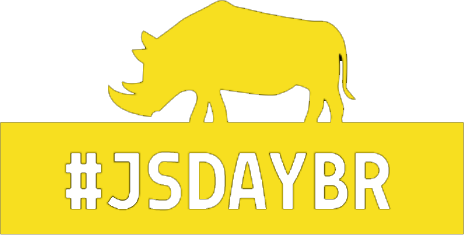

- JSDay Brasil é JavaScript!
- JSDay é comunidade!
Feira de Santana 2020
Aguarde!
VoltarPalestras com alguns dos melhores especialistas da área, trocas de ideias, atividades práticas, sorteios, networking e várias outras surpresas - é isso que os participantes do JSDay Feira de Santana encontrarão.
Além disso, a comunidade de desenvolvedores(as) tem sido destaque e vem contribuindo cada vez mais com o ecossistema de software da região, através da organização de eventos, encontros, hackerspace e projetos sociais.
Será uma experiência totalmente voltada para educação e cultura digital com o uso do JavaScript. Você não vai perder essa, certo? Venha participar com a gente!
Recife 2019
14 de Dezembro / FICR
VoltarO JSDay Recife é um evento imersivo dedicado ao JavaScript, que acontecerá no dia 14 de Dezembro de 2019 em Recife, nas instalações de um dos maiores institutos de ensino do Brasil, a FICR (Faculdade Imaculada Conceição do Recife).
Serão dois auditórios com palestras simultâneas para quem quer iniciar ou se aprofundar no JavaScript. Teremos intervalos para networking com comidas, bebidas, sorteios de brindes e aquele cafezinho ;)
Palestras com alguns dos melhores especialistas da área, trocas de ideias, atividades práticas, sorteios, networking e várias outras surpresas - é isso que os participantes do JSDay encontrarão.
O conteúdo do evento, horário e ordem das palestras serão divulgados progressivamente e sempre teremos novidades emnosso sitee em nossas redes sociais.
Serviço:
- Onde: FICR
- Data: 14 de Dezembro 2019
- Público estimado: +350 pessoas
Rio de Janeiro 2019
À confirmar
VoltarEdição com data ainda à confirmar
O JSDay Brasil é uma conferência criada para trazer temas atuais e inovadores sobre a linguagem mais utilizada do mundo, o JavaScript!
Estamos unindo o público com as empresas e profissionais para falar sobre tecnologia, inovação e desenvolvimento.
Queremos deixar um legado sobre conhecimento tecnológico, promover a experimentação e vivência em desenvolvimento de software para os participantes e, principalmente, criar e manter um seguro e focado em educação e na excelência em conferência de tecnologia e inovação.
Ficha técnica do evento:
- Público total: +2.500
- Edições realizadas: 12
- Média de público por edição: +200
- Total de palestras: +130
- Total de workshops: +40
- Estados que já visitamos: Bahia, Alagoas, Pernambuco, Paraíba e Rio de Janeiro
Edições que realizamos
Recife 2018
01 de Dezembro / FICR
VoltarEm 2018 o JSDay Recife recebeu confortavelmente mais de 250 pessoas na nova sede da FICR. Foram duas trilhas paralelas totalizando 14 palestras, aproximadamente 8h de pura imerssão no JavaScript.
Palestras relevantes e alto nível técnico definem esta edição, destaques para a palestra internacional com o especialista em NodeJS, o Alejandro Oviedo, também para as meninas que emplacaram mais de cinco palestras e ao recorde de público com mais de 250 pessoas de vários estados do Brasil.
Os partipantes do JSDay encontraram salas confortáveis, climatizadas e com tratamento acústico, alimentação de qualidade nos intervalos das palestras, atividades práticas, sorteios, networking e várias outras surpresas que fizeram esta edição tão especial e brilhante.
Agradecimentos especiais aos nossos patrocinadores e ao nosso querido e fiel público!
Ficha técnica do evento:
- Público total: 254
- Trilhas: 2
- Total de palestras: 14
Feira de Santana 2018
11 de Agosto / FTC (Faculdade de Tecnologia e Ciências)
VoltarO JSday chegou mais uma vez a Feira de Santana. Contamos com mais de 150 pessoas e foi realizado na FAT.
Foram 2 workshops, 8 palestras e uma novidade: lightning talks. Assim os participantes fizeram parte do evento com palestras de 5 minutos.
Mais uma vez fizemos um evento de excelência para o público de Feira de Santana e região.
Ficha técnica do evento:
- Público total: 150
- Trilhas: 2
- Total de palestras: 8
- Total de workshps: 2
Rio de Janeiro 2018
9 de Junho / Espaço Oi Futuro
VoltarO JSday chegou na cidade maravilhosa, Rio de Janeiro. Tivemos a presença de mais de 100 pessoas, 10 palestrantes tanto locais quanto de outros estados.
Sendo este o primeiro evento focado em Javascript do Estado e o primeiro JSDay realizado na região Sudeste. O evento aconteceu no Espaço Oito em Ipanema.
Nesta primeira edição tivemos patrocinadores que nos ajudaram a fazer um evento gratuito para os participantes levando a melhor qualidade possível a todos, com infraestrutura, coffee, fotografia, filmagem e brindes. Os patrocinadores foram: VTEX, Globo.com, B2W Digital, Umbler e Liferay.
Ficha técnica do evento:
- Público total: 100
- Trilhas: 1
- Total de palestras: 10
Recife 2017
16 de Dezembro / FICR
VoltarEssa edição aconteceu no lindo campus da Faculdade Imaculada Conceição do Recife (FICR). Contamos com a participação das empresas MaxMilhas, Udacity, Stone, Artics.
O JSDay Recife mais uma vez reuniu a comunidade Javascript para muito conteúdo, palestras e troca de experiências.
Ficha técnica do evento:
- Público total: 205
- Trilhas: 2
- Total de palestras: 16
- Total de workshps: 1
Feira de Santana 2017
De 14 até 15 de Julho / FTC
VoltarO JSday chegou novamente a Feira de Santana. Contamos com mais de 274 pessoas e foi realizado na FTC. Foram 5 workshops.
Tivemos palestrantes de nível internacional, como Gabriel Mičko, contribuidor e voluntário na Mozilla, e de vários lugares do Brasil. O evento foi o maior já realizado em Feira de Santana.
Ficha técnica do evento:
- Público total: 274
- Trilhas: 2
- Total de palestras: 15
- Total de workshps: 5
Recife 2016
26 de Novembro / CESAR School
VoltarEssa edição contou com a participação de toda a comunidade de desenvolvedores e de empresas como ThoughtWorks, CESAR, InlocoMedia, W3C entre muitas outras que apoiaram o evento.
Realizado novamente nas instalações do CESAR EDU, o JSDay Recife mais uma vez reuniu a comunidade Javascript para mais de 36 horas de conteúdo, palestras e troca de experiências.
Destaque para o Codelab das meninas do Women Who Code Recife, e pela iniciativa de incluir especialistas na linguagem de sinais, deixando o evento ainda mais acessível e inclusivo!
Ficha técnica do evento:
- Público total: 173
- Trilhas: 2
- Total de palestras: 16
- Total de workshps: 2
Feira de Santana 2016
23 de Julho / UNIFACS
VoltarO JSday chegou mais uma vez a Feira de Santana. Contamos com mais de 190 pessoas e foi realizado na UNIFACS.
Foram 3 workshops, inclusive um exclusivo para o público feminino promovido pelo WTM Salvador. Tivemos palestrantes de alto nível de várias cidades do Nordeste e o evento foi ainda maior que o primeiro em 2015.
Ficha técnica do evento:
- Público total: 190
- Trilhas: 2
- Total de palestras: 16
- Total de workshps: 3
Campina Grande 2016
23 de Abril / FACISA
VoltarO JSday Campina Grande foi sem dúvidas, o maior evento do JSday realizado no Brasil. Contou com mais de 450 pessoas, e foi realizado no belíssimo teatro da FACISA. Muito código, palestras, 2 workshops e um networking de altíssima qualidade com participantes de Recife, Maceió, São Paulo, João Pessoa e de outras regiões. Mais um dia marcado na história do JSday Brasil.
Ficha técnica do evento:
- Público total: 458
- Trilhas: 2
- Total de palestras: 12
- Total de workshps: 2
Recife 2015
12 de Dezembro / CESAR EDU
VoltarO JSday Recife foi a edição que gerou mais conteúdo. Foram mais de 36 horas divididas entre as atividades do dia. Esta edição foi realizada nas instalações do CESAR EDU, braço acadêmico do maior instituto de inovação e pesquisa do Brasil, o CESAR, que fica no coração do vale do silício do Brasil, o Porto Digital. Uma edição para ficar na memória e no coração dos JavaScripters presentes, além de provar que essa linguagem está em todos lugares.
Ficha técnica do evento:
- Público total: 226
- Trilhas: 2
- Total de palestras: 24
- Total de workshps: 4
Maceió 2015
12 de Setembro / CESMAC
VoltarO JSday Maceió foi a segunda edição do JSday Brasil, e provou a força da comunidade JavaScript Alagoano.
Essa edição contou com alto nível técnico das palestras, com a presença do Juarez Filho, Google Developer Expert, e o Felipe de Albuquerque, Front End Engineer no CESAR Recife com a palestra "NodeBots: JavaScript além das telas". Além de expandir o número de participantes, o JSday Maceió provou que é possível romper as barreiras e levar conhecimento para o Nordeste inteiro.
Ficha técnica do evento:
- Público total: 212
- Trilhas: 1
- Total de palestras: 10
- Total de workshps: 1


